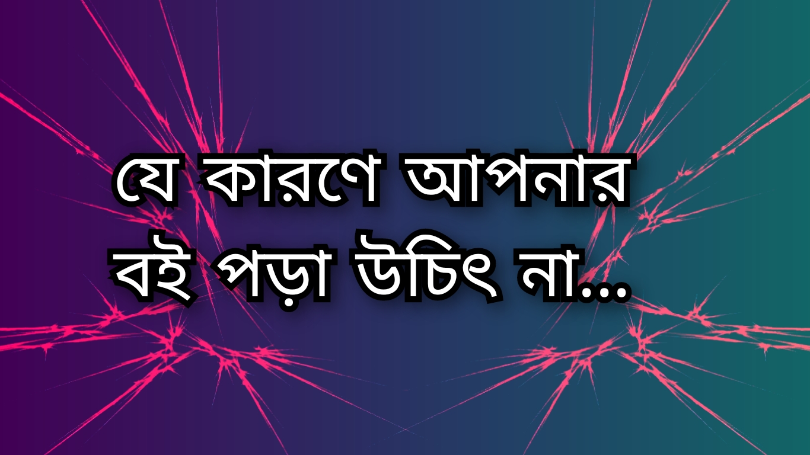

বই অনেক ধরনের হয়৷ বিজ্ঞান বিষয়ক বই, ভ্রমন, অভিজ্ঞতা, দর্শন, সাহিত্য সহ নানান বিষয়ক বই আছে৷ অনেকের একটা নির্দিষ্ট জনরার বই পছন্দ, অনেকের বিভিন্ন জনরার। কারোর থিলার পছন্দ তো কারোর থ্রিলার, মিস্ট্রি, স্যাটায়ার ইত্যাদি জনরা পছন্দ৷
আচ্ছা এর আগে বলুন, আপনার একটা মাঝারি আকারের বই পড়ে শেষ করতে কতদিন লাগে? ধরলাম বইটার আকার ২০০ পেজ এবং তা বিজ্ঞানের কোন টপিকে লেখা। যারা পড়ুয়া তারা হয়তো একবসায় পড়ে ফেলবে৷ আমি ধরে নিলাম আপনি ব্যাক্তি জীবনে খুব ব্যাস্ত একজন মানুষ, কাজের প্রচুর প্রেসার, তাও সময় বের করে বইটা পড়লেন এবং পড়তে আপনার ৪-৫ দিন লাগলো। এবার একটু প্রসঙ্গ পালটানো যাক...
একজন সায়েন্স ব্যাকগ্রাউন্ড লেখকের বিজ্ঞানের একটা জটিল টপিককে আমজনতার লেভেলে আনার জন্য প্রচুর গবেষণা, সময় ব্যায় এবং প্রচুর চিন্তা করতে হয়। বিশেষ করে স্কুল পড়ুয়ারা যাতে তাদের মনের ভিতর উত্থাপিত প্রশ্নের উত্তর বা কৌতুহল বইটা পড়ে মেটাতে পারে, নতুন কিছু জানতে পারে। লেখককে অনেক ক্ষুদ্র ক্ষুদ্র বিষয়াদির উপর নজর রাখতে হচ্ছে যেনো কোথায় বিন্দু পরিমাণ ভুল না হয় বা কেও যাতে যা বুঝানো হয়েছে তার বাইরে গিয়ে ভুল কিছু ভেবে না বসে। এরকম একটা সুন্দর, গোছালো একং তথ্যবহুল বই লেখার জন্য একেকজন লেখকের ৬ মাস হতে ৭-৮ বছর বা তার বেশি সময়ও লেগে যেতে পারে।
এখন আপনি সুন্দর করে বইটা কিনে এনে সেই লেখকের এতদিনের সাধনার অর্জিত জ্ঞান ৪-৫ দিনেই নিজের মধ্যে নিতে পারছেন। বিষয়টা চমকপ্রদ না? এরকম বই মাসে ১-২ টা বা বছরে ৯-১০ টা পড়লে কি আপনি আপনার চারপাশে থাকা লোকেদের তুলনায় জ্ঞান-বুদ্ধিতে তাদের ছাড়িয়ে যাবেন না? এই যে আপনি বছরে ১০টা বই পড়লেন, লেখকদের ইন্ডিভিজ্যুয়াল গবেষণার মোট ১৪-১৫ বছর ধরে অর্জিত জ্ঞানকে আপনি এক বছরে অর্জন করছে, এতে কি আপনার মনে শিহরণ জাগে না? আপনি শুধু চিন্তা করে দেখুন, আপনার বয়স এক বছর বাড়লো কিন্তু আপনি এই একবছরে কিছু বই পড়লেন এবং বছর শেষে আপনার জ্ঞান ১৫-১৬ বছর এগিয়ে গেল! আপনার সাথে থাকা বন্ধুটি যিনি বই পড়েন না, তার এই জ্ঞান নিতে হয়তো ১৪-১৫ বছর বা তারও বেশি সময় লাগতো।
এতক্ষনের প্যাঁচালে আপনাকে শুধু বললাম বিজ্ঞানের বই পড়লে কি হবে। এখন আপনি ভেবে দেখুন, একজন চিন্তাবিদ বা দার্শনিকের বই পড়লেন, আপনি ৪-৫ দিনে সেই পরিমাণ জ্ঞান অর্জন করতে পারবেন যা অর্জন করতে তাদের ৩৫-৪০ বছর সময় লেগেছিলো! আপনি যাস্ট কয়েক রাতের ব্যাবধানে ৪০ বছর বেশি ম্যাচিওর হয়ে গেছেন! আপনি একটা উপন্যাস পড়লেন, ধরলাম সেটা একটা সামাজিক উপন্যাস ছিলো, এখন সেই উপন্যাসের কোন এক চরিত্রের করা ভুল গুলো থেকে আপনি শিক্ষা নিলেন এবং বাস্তব জীবনে তা প্রয়োগ করে সেসকল ভুল ত্রুটিগুলো এড়িয়ে চলতে সক্ষম হলেন৷ তাহলে কি আপনার জীবনটা আরো সুন্দর এবং ঝামেলা মুক্ত হবে না? আপনি এবার কৌটিল্যের অর্থশাস্ত্র পড়লেন, "The art of war" পড়লেন, "The art of thinking clearly" পড়লেন, "Still like an artist" পড়লেন, "Rich dad poor dad" সহ এরকম আরো কিছু সুন্দর বই পড়লেন, এবার আপনি আপনার চিন্তাধারা, সিদ্ধান্ত গ্রহন, কথা বলার ধরন, শব্দ চয়ন ইত্যাদি আরো নিঃখুত ভাবে করতে পারবেন!
এখন আপনিই আমাকে বলেন, বই পড়ায় যদি আপনি অন্যদের তুলনায় ম্যাচিওর হন, সিদ্ধান্ত গ্রহনে পারদর্শী হন, গুছিয়ে কথা বলতে পারা সহ ইত্যাদি গুন রপ্ত করতে পারেন, তাহলে আপনি কেন বই পড়বেন না? কেন বই পড়তে চাবেন না?!